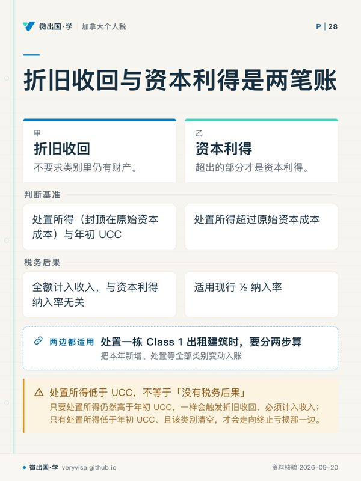
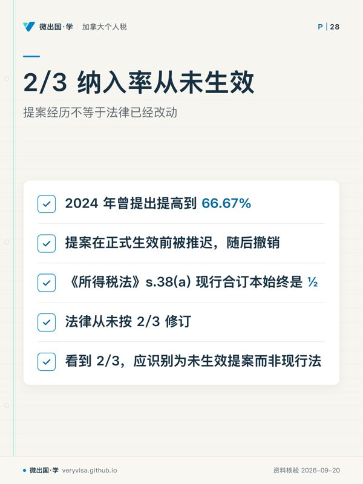

🃏 Flashcards · 3 闪卡 · 3 张 🖼 Slides · 3 幻灯 · 3 页 ✍️ Questions · 7 刷题 · 7 道
房产：出租与主居所 Real property P2 稳住 P2 Hold steady
ZH EN ZH + EN
先看这一章怎么考 First, how this chapter is tested
当期费用与资本支出辨析题：考查房屋修缮维护支出的定性，重点测试区分单纯恢复原状的当期费用还是带来实质改良或延长寿命的资本支出，以及大额装修分年计提折旧的要求。 Current expense versus capital expenditure: tests how to characterize spending on repairs and maintenance of the property. The key skill is telling a current expense that merely restores the original condition apart from a capital expenditure that brings a substantial improvement or extends the life of the property, and knowing that a large renovation must be depreciated over several years. 折旧造亏限制与净收入封顶计算题：考查个人出租物业 CCA 上限规则，重点测试在合并本人全部出租物业净收入后，CCA 绝不能制造或扩大亏损的硬性红线，以及未用额度留存 UCC 的结转逻辑。 The CCA limit and the net-income cap: tests the CCA limit for an individual's rental properties. The key skill is the hard rule that, after combining the net income of all of the taxpayer's rental properties, CCA can never create or increase a loss, and the logic that the unclaimed amount stays in UCC. 房屋处置折旧收回与资本利得双轨计算题：考查出租物业出售时的两笔账，重点测试处置所得与年初 UCC 比较产生的 100% 计入收入的折旧收回（或终止亏损），以及超出原成本部分按现行 1/2 纳入率计入的资本利得。 Recapture and capital gain on the sale of a rental property: tests the two separate calculations when a rental property is sold. The key skill is comparing proceeds of disposition with the opening UCC, where the excess is recaptured CCA included in income at 100% (or a terminal loss), and the part above original cost is a capital gain included at the current 1/2 inclusion rate. 最常丢分的陷阱（看到题干信号就警觉） Traps that cost the most marks (watch for the signal in the stem)
误用 CCA 制造或扩大出租亏损抵扣其他收入 Using CCA to create or increase a rental loss to offset other income 题干给出净出租收入低于可用 CCA 最大额度，问当年最多能申报多少 CCA，或者询问总收入计算。 The question gives net rental income lower than the maximum CCA available and asks for the most CCA that can be claimed for the year, or asks how total income is computed. 将卖房收益全额按资本利得五成纳入率纳税 Taxing the whole gain on a sale at the 50% capital gain inclusion rate 题干同时给出房屋原始资本成本、年初 UCC 以及高于原成本的售价，询问处置当年应计入收入的税法总额或各项明细。 The question gives the original capital cost of the building, the opening UCC and a sale price above original cost, and asks for the total or the components included in income for the year of disposition. 将短租法定门槛误记为 30 天或以为 2026 仍有宽限期 Remembering the short-term rental threshold as 30 days or assuming a 2026 grace period 题干出现租约天数（如 45 天或 60 天）、当地政府短租登记牌照缺失，问相关费用能否抵扣或剔除比例。 The question gives the number of days of a tenancy (such as 45 or 60 days), a missing local government short-term rental registration or licence, and asks whether the expenses are deductible or what proportion is denied. 本章考点页：导图、要点表、7 道带逐项解析的练习 →
核实日期：2026-10-30｜适用表格：《不动产出租情况表》Form T776 – Statement of Real Estate Rentals，总收入落 Line 12599、净收入落 Line 12600｜复核周期：本页含短租不合规费用比例与 BC 省税率两类会变的规则，180 天复核一次（下次 2027-01-31）。
这一章解决的问题很具体：手上有一套（或几套）出租物业，2026 税年该怎么在 T776 上把租金收入、费用、折旧填对，尤其是三个最容易出错的地方——当期费用和资本支出分不清、CCA 多扣了造出一笔本不该有的亏损、卖房那天该算的两笔账（折旧收回与资本利得）混成了一笔账 。下面依次讲清楚：一笔装修支出该当年全扣还是分年折旧；这一年最多能申报多少 CCA 而不会被税局调整；卖出物业时，折旧收回和资本利得怎么分开算；以及 BC 省的投机空置税为什么跟这些联邦规则是两回事。
一、制度设计与底层逻辑：为什么出租收入不能像营业收入那样自由计提折旧 本节回答 This section answers 出租物业错报费用的重大过失罚款标准 Know the standard for the gross negligence penalty on misstated rental expenses 本章考题 1 Question 1 本章考题 2 Question 2
出租收入在《所得税法》里归为「财产所得」（income from property），不是「营业所得」（income from business）——这个分类看似技术性，实际决定了整章规则的走向。营业所得允许经营者用各种手段（包括激进计提折旧）主动管理当期应税所得，因为经营本身承担着更大的市场风险，立法者给了更大的操作空间；财产所得的定性是「被动持有资产产生的回报」，风险结构不同，税局对它的容忍度也更窄。这条底层逻辑直接落到三条具体规则上：
第一，当期费用与资本支出必须严格分开 ，不能像营业活动那样把界线用会计政策自由裁量。判断标准不是「花了多少钱」，而是这笔支出有没有让物业的状态发生实质性改良、有没有带来超出原有水平的长期利益——简单复原到原状态（哪怕换的材料比原来的新）是当期费用，实质性提升物业价值或延长使用寿命的是资本支出。
第二，CCA 不能用来制造或扩大出租亏损 ——这是本章最容易被忽视、也是税局稽核出租物业时查得最勤的一条。经营性资产的所有者可以选择多提折旧、故意做出亏损去抵扣其他收入；出租物业的个人业主不行：在合并本人适用的全部出租物业损益后，可申报CCA受该合计净出租收入及各类别法定额共同限制，一旦净收入是零或负数，当年的 CCA 申报额也只能是零，多出来的折旧额度不会消失，而是留在未折旧资本成本（Undepreciated Capital Cost, UCC）里，等以后年度净收入允许时再继续申报。
第三，共有产权（co-ownership）与合伙（partnership）在 CCA 处理上是两套完全不同的逻辑 ，很多没有正式登记合伙关系、只是几个人一起出钱买房出租的业主，会想当然地以为大家必须「统一动作」。实际上，只要没有构成法律意义上的合伙，各共有人对自己那一份资本成本各自独立记账、各自决定是否申报 CCA——哥哥申报、弟弟当年不申报都可以；一旦构成合伙，资本财产属于合伙整体，CCA 必须由合伙统一申报（或都不报），净收入再按份额分给各合伙人。分不清这两者，轻则报税逻辑错了，重则在税务稽核时说不清楚谁对这笔资产负什么责任。
错报这几条规则的法律后果不是小事：多扣的 CCA 一旦被税局重新评估（reassessment），补税之外还要加计利息；如果稽核认定错报是「明知或罔顾情节严重」（gross negligence），还可能触发《所得税法》第 163(2) 条的重大过失罚款，通常是少缴税款的 50%。这不是危言耸听——出租物业的费用申报是 CRA 例行审计里命中率最高的板块之一，因为个人业主往往同时用一部分收据抵扣自住支出，稽核一比对水电费、地税单据的名字和地址就能发现问题。
节末检索小测 · 先别往回翻，凭记忆作答 Quick recall check: answer from memory before scrolling back
Simon owns a residential rental property in Surrey. During a CRA audit of his 2026 tax return, the auditor discovered that Simon deliberately and knowingly claimed $12,000 of personal vacation and grocery expenses on Form T776, resulting in an understated tax liability of $4,000. CRA determined that Simon's conduct constituted gross negligence. What penalty may CRA impose on Simon under subsection 163(2) of the Income Tax Act?
Simon 在素里拥有一处住宅出租物业。在 CRA 对其 2026 年税表的审计中，审计员发现 Simon 明知故犯地在 T776 表上申报了 $12,000 的个人度假和生活开销，导致少缴税款 $4,000。CRA 认定 Simon 的行为构成了重大过失。根据《所得税法》第 163(2) 条，CRA 可对 Simon 处以多少罚款？
a $2,000, which is the statutory gross negligence penalty of 50% of the understated tax liability. ✓ 正确。根据《所得税法》(Income Tax Act, ITA) 第 163(2) 条，当纳税人在报税时存在明知或重大过失（gross negligence）虚报扣除导致少缴税款时，CRA 可处以少缴税款 50% 的重大过失罚款。本案少缴税款为 $4,000，其 50% 即为 $2,000。 Correct. Under section 163(2) of the Income Tax Act (ITA), when a taxpayer knowingly or through gross negligence misstates a deduction on a return and so underpays tax, CRA may impose a gross negligence penalty of 50% of the tax understated. Here the tax understated is $4,000, and 50% of it is $2,000.
b $400, calculated as a standard 10% late-filing administrative surcharge. ✗ 错误。10% 并非重大过失罚款的法定比例。本案属于纳税人故意虚报费用的严重情节，适用 ITA s.163(2) 规定的 50% 罚款比例。 Incorrect. 10% is not the statutory rate for a gross negligence penalty. This case involves a serious deliberate misstatement of expenses, to which the 50% penalty rate in ITA s.163(2) applies.
c $4,000, representing a 100% complete forfeiture of the unpaid taxes. ✗ 错误。误以为重大过失罚款是 100% 罚没。法定罚款比例为少缴税款的 50%，除补缴税款及利息外，罚款本身为 $2,000。 Incorrect. This assumes a gross negligence penalty confiscates 100%. The statutory penalty rate is 50% of the tax understated, so besides the tax owing and interest, the penalty itself is $2,000.
d $0, because penalties under subsection 163(2) only apply to corporate business income. ✗ 错误。重大过失罚款同样全面适用于个人所得税（T1）及出租物业（T776）的虚假申报，并非仅限于公司税。 Incorrect. The gross negligence penalty applies equally to false reporting on the personal T1 and on rental property (T776) and is not limited to corporate tax.
看答案与每个选项的解析 Show the answer and why each option is right or wrong 答案 Answer ：a
二、2026 税年现行规则与数字 本节回答 This section answers 2026税年资本利得现行纳入率 Know the current capital gains inclusion rate for the 2026 tax year 本章考题 3 Question 3
2.1 CCA 上限：不能造亏这条红线没有变
Class 1（大多数 1988 年后取得的出租建筑物）采用递减余额法计提折旧，先判断取得日、可供使用日及是否适用AII/RII等首年激励。半年规则只是一般规则，符合特别措施的财产不能照常减半；新合资格专建出租住宅按ITR1100(1)(a.4)另加六个百分点，合计普通年率10%；施工起点（2024-04-15 之后、2031 年之前）、2036 年前可供使用及住宅单位数等条件须符合《所得税条例》1104 条的定义；这项加速折旧已由 Budget 2025 实施法（Bill C-15，2026-03-26 御准）写入条例，是现行规则而非提案（laws-lois.justice.gc.ca（1 、2 ）、Parliament of Canada ）。真正会年年被问到的是那道硬上限：
举例：净出租收入（扣除其他费用、申报 CCA 之前）是 $3,500，可用的 CCA 上限本来有 $9,200，那么这一年最多只能申报 $3,500，把净收入降到零，不能借此制造亏损去抵扣工资等其他收入；未扣部分仍体现在UCC余额中，未来按当年UCC和适用税率重新计算，并不是另有固定$5,700可直接扣的结转额度。
2.2 短租不合规费用不可扣：2024 年的宽限已经过期（三列表）
这是 2026 税年最容易让人多缴税——或者反过来，少扣了根本不该被砍掉的费用——的一条，因为大多数人对「短租」的门槛记错了。
三列出处均为 ITA s.67.7（论坛解读） （加拿大联邦法规库（论坛解读） ）。常见误记是把门槛记成不足 30 连续天，而不是法条实际写的 90 连续天。
也就是说，2026 税年一位业主如果在温哥华或其他要求短租登记的城市经营不足 90 天的短租，全年没有申请牌照，对应比例的水电、保险、管理费甚至 CCA 都会被剔除不可扣——而且这一次没有任何宽限期兜底。(ITA s.67.7（论坛解读） )
✕
「不足 90 天」按的是每一段租约单独算，不是全年总天数
只要某一段租约本身不足 90 连续天，这一段就落进「短租」的定义，要单独判断这段是否合规；不能因为全年出租总天数超过 90 天，就以为整年都不算法定短租。
2.3 卖出物业那一天：折旧收回与资本利得是两笔账，不是一笔账
图：卖房那一天的两笔账——折旧收回与资本利得
这是本章计算量最大、也最容易被简化成一句话讲错的部分。处置一栋 Class 1 出租建筑时，要分两步算：
第一步：折旧收回（recapture）或终止亏损（terminal loss），按 UCC 算，全额计入收入，与资本利得纳入率无关。 判断基准是「处置所得（封顶在原始资本成本）」与「年初 UCC」的比较：把本年新增、处置等全部类别变动入账后，如CCA前的类别UCC为负数，该负数绝对值一般作折旧收回；不要求类别里仍有财产（T776 对应栏位）；如果年末该类别已无财产、且UCC仍为正数并满足终止亏损条件，这笔正数余额作为终止亏损，当年全额从收入中扣除。
第二步：如果处置所得超过原始资本成本，超出的部分才是资本利得，适用现行 ½ 纳入率。 「资本利得纳入率现行仍是 ½」这件事本身在 2026 税年是个容易被搞混的话题——2024 年一度有把纳入率提高到 66.67% 的立法提案，但这项提案在正式生效前就被推迟、随后撤销，《所得税法》s.38(a) 现行合订本自始至终只有 ½，从来没有按 2/3 修订过。凡是看到「2/3 纳入率」的说法，都是在讲一条从未生效过的提案。(ITA s.38(a) )
⚠️
处置所得低于 UCC，不等于「没有税务后果」
很多业主以为亏本卖房就什么都不用报——如果处置所得低于原始资本成本，确实不会有资本利得，但只要处置所得仍然高于年初 UCC，一样会触发折旧收回，必须计入收入；只有处置所得低于年初 UCC、且该类别清空，才会走向终止亏损那一边。
2.4 住宅翻炒规则：出租物业一样可能被抓进去
如果这套出租物业本身持有不足 365 连续天就被处置，另外还要叠加《所得税法》s.12(12)–(14) 的「住宅翻炒」（flipped property）规则：整笔利得视同经营收入，不适用资本利得的 ½ 纳入率，也用不上主居所豁免；如果反而是亏损，这笔亏损单边视为零。这条规则不要求物业是自住房，出租用途的住宅同样可能落入定义 ，只有九类法定生活事件（死亡、家庭成员变动、婚姻破裂、人身安全、重病或残疾、工作调动、非自愿终止雇佣、破产、财产灭失或被征收）能排除适用。折旧收回的计算不受这条规则影响，仍按上面第一步单独算——一笔处置最多同时涉及「经营收入定性」和「折旧收回」两件互不替代的事。
节末检索小测 · 先别往回翻，凭记忆作答 Quick recall check: answer from memory before scrolling back
In the 2026 tax year, Liam disposed of a residential rental building that generated a genuine capital gain of $80,000 in excess of its original capital cost. When preparing his 2026 personal tax return, what statutory capital gains inclusion rate must Liam apply to calculate his taxable capital gain?
在 2026 税年，Liam 出售了一栋出租住宅建筑，产生了超出其原始资本成本的 $80,000 真实资本利得。在编制 2026 年个人税表时，Liam 必须依据哪项法定资本利得纳入率来计算其应税资本利得？
a 66.67% (2/3), because legislation enacted in 2024 permanently increased the inclusion rate for rental and investment properties. ✗ 错误。掉入了从未生效的立法提案陷阱。2024 年虽曾提出将纳入率提高到 2/3 的提案，但该提案在生效前已被推迟并随后撤销，现行法律从未修改为 2/3。 Incorrect. This falls into the trap of a legislative proposal that never took effect. The 2024 proposal to raise the inclusion rate to 2/3 was postponed before it took effect and then cancelled, and current law was never changed to 2/3.
b 50% (1/2), because the 2024 proposal to raise the inclusion rate to 2/3 was withdrawn before enactment, leaving ITA subsection 38(a) at 1/2. ✓ 正确。根据《所得税法》(ITA) 第 38(a) 条现行法律，资本利得纳入率 (capital gains inclusion rate) 始终为 1/2（50%）。2024 年提高至 2/3 的提案已被撤销，2026 税年依然按 50% 纳入应税所得（$80,000 × 50% = $40,000）。 Correct. Under current ITA s.38(a), the capital gains inclusion rate is always 1/2 (50%). The 2024 proposal to raise it to 2/3 was cancelled, and for the 2026 tax year 50% is still included in taxable income ($80,000 x 50% = $40,000).
c 75% (3/4), which is the standard historical rate applied to passive real estate capital gains. ✗ 错误。75% 是历史上多年前曾采用过的旧纳入率，现行 2026 税年法律规定的资本利得纳入率明确为 50%（1/2）。 Incorrect. 75% is an old inclusion rate used many years ago. The current 2026 tax year law expressly sets the capital gains inclusion rate at 50% (1/2).
d 100%, because passive investment property dispositions are taxed at full ordinary rates without capital gains relief. ✗ 错误。混淆了折旧收回（Recaptured CCA，100% 纳入）与资本利得（Capital Gain）。超出原始资本成本的部分属于资本利得，依法享有 50% 纳入率。 Incorrect. This confuses recaptured CCA (included at 100%) with a capital gain. The part above original capital cost is a capital gain and by law gets the 50% inclusion rate.
看答案与每个选项的解析 Show the answer and why each option is right or wrong 答案 Answer ：b
三、实务流程：哪张表、哪一行、什么凭证、什么截止日 本节回答 This section answers T776申报行号与无自雇业主的报税截止日 Know the T776 line numbers and the filing deadline for a taxpayer with no self-employment income
出租收入用 Form T776 申报，总收入落 Line 12599 ，净收入（或净亏损）落 Line 12600 ，并入个人报税表 T1 的总收入。实务上要按下面的顺序走：
区分收入类别 ：判断这笔活动到底是「财产所得」还是「营业所得」——如果只是出租、偶尔换换租客，属于财产所得，用 T776；如果额外提供清洁、保安、餐饮等实质性服务，可能被认定为经营活动，要改用 Form T2125 申报。区分当期费用与资本支出 ：当期费用（维修、保险、地税、管理费、利息）直接在当年全额扣除；资本支出先归入正确的 CCA 类别（Class 1 建筑物、Class 8 家具家电等常见类别），逐年计提。共有产权按份额各自申报 ：多个业主的物业，收入、费用、CCA 按各自持有比例分别记账，配偶或未成年子女作为共有人时还要留意归属规则（attribution rules）是否把收入重新归到出资更多的一方名下。自住与出租混用要按合理基准分摊 ：整栋物业一部分自住、一部分出租（例如带地下室套房出租），费用要按面积或房间数等合理基准分摊出「个人部分」与「出租部分」，只有出租部分可以扣除；CCA 同理，只对出租部分的资本成本计提。保留凭证 ：租约、收据、装修发票、房产评估或估价报告（用于拆分土地与建筑物的成本），CRA 稽核出租物业时最先要的就是这些。短租额外核对当地登记要求 ：出租前确认物业所在城市/省是否要求短租牌照或登记，未合规会直接触发费用不可扣。截止日期 ：个人报税截止日通常是次年 4 月 30 日，若本人或配偶有自雇收入则延至 6 月 15 日（欠税部分仍按 4 月 30 日计息）；出租收入本身不改变这个截止日。
节末检索小测 · 先别往回翻，凭记忆作答 Quick recall check: answer from memory before scrolling back
Brenda is an employed teacher in Burnaby with no business income. In 2026, she earned $24,000 in gross rental income and incurred $10,000 in eligible deductible current expenses from a residential rental unit. On which tax form and lines must Brenda report these amounts, and what is her T1 tax filing deadline for the 2026 tax year?
Brenda 是本拿比的一名受雇教师，没有任何经营收入。在 2026 年，她的一处住宅出租单元取得总租金收入 $24,000，发生合资格可扣除当期费用 $10,000。Brenda 必须在哪个税表及行号申报这些金额？她 2026 税年的 T1 申报截止日是哪一天？
a Form T2125, Line 8000 for gross income and Line 8299 for net income, with a filing deadline of June 15, 2027. ✗ 错误。Form T2125 用于营业或专业活动所得（business income），被动出租财产所得必须使用 Form T776；且无自雇收入的个人申报截止日并非 6 月 15 日。 Incorrect. Form T2125 is for business or professional income. Passive rental property income must use Form T776, and the deadline for an individual with no self-employment income is not June 15.
b Schedule 3, Line 12700 for gross rental income and Line 17900 for net rental income, with a filing deadline of April 30, 2027. ✗ 错误。Schedule 3 是资本利得（Capital Gains）附表，Line 12700 是应税资本利得行号，不用于常规年度租金收入与费用的申报。 Incorrect. Schedule 3 is the capital gains schedule, and Line 12700 is the taxable capital gains line. It is not used to report ordinary annual rent and expenses.
c Form T776, Line 12599 for gross income and Line 12600 for net income, with an extended filing deadline of June 15, 2027. ✗ 错误。行号正确，但申报截止日错误。出租收入属于财产所得，出租物业本身并不赋予纳税人 6 月 15 日的自雇延期待遇，无自雇收入者的截止日严格为 4 月 30 日。 Incorrect. The line numbers are right but the filing deadline is wrong. Rental income is property income, and owning rental property does not give the taxpayer the June 15 self-employment extension. The deadline for someone with no self-employment income is strictly April 30.
d Form T776, Line 12599 for gross income ($24,000) and Line 12600 for net income ($14,000), with a filing deadline of April 30, 2027. ✓ 正确。根据 CRA 实务申报指南，不动产出租收入使用 Form T776 申报，总收入填入 Line 12599，净收入填入 Line 12600。由于 Brenda 及其配偶均无自雇经营收入，出租收入并不改变申报截止日，其 2026 年 T1 申报截止日仍为次年 4 月 30 日。 Correct. Under CRA's practical filing guidance, rental income from real property is reported on Form T776, with gross income on Line 12599 and net income on Line 12600. Because neither Brenda nor her spouse has self-employment business income, rental income does not change the filing deadline, and her 2026 T1 deadline is still April 30 of the next year.
看答案与每个选项的解析 Show the answer and why each option is right or wrong 答案 Answer ：d
四、联邦之外：BC 省的投机空置税，是另一套并行制度 本节回答 This section answers BC投机空置税公司持有的税率判定规则 Know the BC speculation and vacancy tax rate rules for corporate holders 本章考题 4 Question 4
BC 省的投机与空置税（Speculation and Vacancy Tax, SVT）是省级、按物业评估价按年课征的税种，跟联邦所得税的出租申报义务是两件互不替代的事 ：不管这套房是不是要缴 SVT、缴多少 SVT，只要收了租金，联邦层面就要在 T776 报出租收入与费用；反过来，就算联邦这边规规矩矩报了税，也不代表 SVT 自动免征。
税率：2025 到 2026 有实打实的上调。
三列均出自 BC 投机空置税税率页 （BC 省政府 ），该页同时公布 2027 年将进一步升到 1%/4%。多个业主按各自持股比例分摊；公司、信托或合伙持有则按其中持有人里适用税率最高的那一档，整体课税。
出租满 6 个月可以豁免 SVT，但不影响联邦申报义务。 现行的「出租豁免」门槛是每个自然年满 6 个月（2018 年首年过渡期是 3 个月，此后一直是 6 个月，2026 未变），且每段租约要满一个整月、可以累加多段租约凑够 6 个月；出租给非关联租客（arm's length tenant），要有按《Residential Tenancy Act》签的书面租约、租客以此为家；出租给关联租客（如家人朋友）时，加拿大公民/永久居民业主（非无税全球收入者）反而不需要书面租约或收租，只要租客经业主同意、每个月大部分时间住在那里即可；只有外国业主或无税全球收入者出租给关联租客，才要求至少一名租客是 BC 居民的公民/永久居民、且其 BC 年收入不低于整处物业年度市场租金的三倍。(BC SVT 出租豁免·租期要求 )
也就是说，一位在列治文有第二套住房、整年出租满 6 个月给非关联租客的加拿大公民，2026 年可以就 SVT 申报「出租豁免」、不用缴那 1%；但同一年，只要这套房收了租金，T776 照样要报，两件事分开判断，谁都不替代谁。
对纯美国投资人而言，出租加拿大境内物业还有另一层：非居民出租收入通常要预缴一部分给 CRA（涉及 ITA s.216 选择申报等安排），这不是本页范围，但要知道「持有非居民身份出租加拿大房产」是完全不同的一套规则，不能直接套用本页给居民业主写的流程。
节末检索小测 · 先别往回翻，凭记忆作答 Quick recall check: answer from memory before scrolling back
A residential condominium in Victoria is owned by an investment corporation. The corporation has two equal individual shareholders: one is a Canadian citizen residing in BC, and the other is a foreign national who is a non-resident of Canada. For the 2026 tax year, assuming no exemptions apply, what BC Speculation and Vacancy Tax (SVT) rate applies to the assessed value of the condo?
维多利亚的一处住宅公寓由一家投资公司持有。该公司有两位持股各半的个人股东：一位是居住在 BC 省的加拿大公民，另一位是加拿大非税务居民的外国公民。在 2026 税年，假设不符合任何豁免条件，该公寓的评估价值应适用多大税率的 BC 省投机与空置税 (SVT)？
a 1%, because the presence of a local Canadian citizen shareholder qualifies the entire corporate entity for the resident rate. ✗ 错误。误以为只要有加拿大公民股东就能拉低税率。BC SVT 对公司、信托或合伙持有物业有穿透归属惩罚规则，不能按本地居民优惠税率计算。 Incorrect. This wrongly assumes that having a Canadian citizen shareholder lowers the rate. The BC SVT has a look-through rule that penalizes property held by a corporation, trust or partnership, and the local resident concessionary rate cannot be used.
b 2%, reflecting the historical flat rate applied to all corporate entities regardless of underlying ownership. ✗ 错误。2% 是 2024 和 2025 税年外国业主的旧税率，2026 税年外国业主税率已依法上调至 3%。 Incorrect. 2% was the old rate for foreign owners in the 2024 and 2025 tax years. For 2026 the foreign owner rate has been raised by law to 3%.
c 3%, because corporations, trusts, or partnerships holding BC residential property are taxed at the highest rate applicable to any of their underlying owners under the 2026 rate schedule. ✓ 正确。根据 BC 省投机与空置税 (Speculation and Vacancy Tax, SVT) 法规，2026 税年加拿大公民/PR（非无税全球收入者）税率上调至 1%，外国业主/无税全球收入者上调至 3%。若通过公司、信托或合伙持有，整体物业按所有持有人中适用税率最高的那一档课征，因存在外国股东，整栋物业适用 3% 税率。 Correct. Under the BC speculation and vacancy tax (SVT) rules for the 2026 tax year, the rate for Canadian citizens and PRs (who are not untaxed worldwide earners) is raised to 1%, and for foreign owners and untaxed worldwide earners it is raised to 3%. If the property is held through a corporation, trust or partnership, the whole property is taxed at the highest rate that applies to any holder, so with a foreign shareholder the whole property is taxed at 3%.
d 0.5%, because investment companies providing rental housing stock are grandfathered under the 2018 inaugural tax tier. ✗ 错误。0.5% 是 2018 年最初过渡税率及 2024-2025 年居民税率，且商业投资公司完全不享受祖父条款的 0.5% 优惠。 Incorrect. 0.5% was the original 2018 transitional rate and the 2024-2025 resident rate, and a commercial investment company providing rental housing stock gets no grandfathered 0.5% concession.
看答案与每个选项的解析 Show the answer and why each option is right or wrong 答案 Answer ：c
五、历史变革：从「按经营活动那样自由折旧」到「设上限防止亏损被制造出来」 本节回答 This section answers 禁止出租折旧造亏的历史成因与税收公平 Understand the historical reason for banning depreciation that creates a rental loss, and tax fairness
早期的税收政策更宽松地对待出租活动，个人业主一度也能像经营者一样，用高折旧申报把出租收入做成账面亏损，再拿去抵扣工资等其他收入——这在当时被视为一种合法的税务规划手段，也确实有不少人靠这个显著降低了整体税负。问题在于，这种做法的经济实质并不是真的亏损 ：房产本身通常在升值，折旧只是会计上的账面扣减，用账面亏损去抵扣真实的工资收入，实质上是把一种资产类别的税收优惠转移给了另一种收入，被认为破坏了税制的公平性。此后，税务当局把「CCA 不能用来创造或扩大出租亏损」写成了明确规则，个人出租物业业主的折旧申报被锁定在净收入范围内，经营活动则不受此限——这条分界线延续至今，2026 税年没有任何松动的迹象。
短租不合规费用不可扣（s.67.7）与住宅翻炒规则（s.12(12)–(14)）则是近年才出现的两条新规则，背景是短租平台兴起、部分城市住房紧张后，立法者希望把「短期出租」与「快进快出炒房」两类活动从税制上与「稳定的长期出租」区分开，给后者保留正常的税收待遇，同时压缩前两者的税务优势——这两条规则考试口径定稿时点还没有完全定型或者尚未纳入，是这几年联邦税制里变化最快的两个角落之一。BC 省的投机空置税则是省级层面更早的一次尝试，2018首年税率为0.5%；2019–2025通常分为0.5%/2%两档，之后按已公布的指定年度上调，2026 年的 1%/3% 只是这条上调曲线上最新的一格，未来还会继续往上走（2027 年已公布升到 1%/4%）。
节末检索小测 · 先别往回翻，凭记忆作答 Quick recall check: answer from memory before scrolling back
Historically, individual landlords in Canada were permitted to claim unrestricted depreciation on rental properties, frequently generating paper tax losses that offset their salaries. Why did the tax authorities eliminate this treatment and introduce the statutory restriction prohibiting CCA from creating or increasing a rental loss?
在历史上，加拿大个人房东曾被允许对出租物业无限制计提折旧，经常做出账面税务亏损去抵减其工资收入。为什么税务当局取消了这一待遇，并出台了禁止利用 CCA 制造或扩大出租亏损的法定限制？
a Property usually appreciated, so paper CCA losses sheltered unrelated salary, shifting a property tax preference to other income. ✓ 正确。根据税制演变历史，出租房产在经济实质上往往处于升值状态，折旧纯属会计账面扣减。纳税人利用账面折旧亏损去冲销真实的工资等其他所得，实质上将财产类别的税收优惠转移给其他收入，破坏了税制公平性，促使税法设立了不能造亏的刚性上限。 Correct. Under the history of the tax system, rental real estate has often been appreciating in economic substance, and depreciation is purely a bookkeeping deduction. If taxpayers could use paper depreciation losses to cancel real income such as salary, they would in effect shift the tax concession for the property category onto other income and undermine fairness in the tax system, which led the law to set the rigid cap that prevents creating a loss.
b Physical rental buildings in Canada were determined by building codes to have an indefinite useful life that never depreciates. ✗ 错误。建筑物物理上依然存在损耗，税法并未否定建筑物折旧的概念，而是为了税制公平性限制了个人用折旧制造亏损去冲减其他收入的行为。 Incorrect. Buildings still wear out physically, and the law has not denied the concept of building depreciation. It limits an individual's use of depreciation to create a loss that offsets other income, for the sake of fairness in the tax system.
c Parliament wanted to compel all individual real estate owners to incorporate into Canadian-controlled private corporations. ✗ 错误。税法修改的目的并非强制房东设立公司，而是修补个人纳税人跨收入类别避税的漏洞。 Incorrect. The purpose of the change was not to force landlords to incorporate but to close a loophole allowing individual taxpayers to avoid tax across income categories.
d CRA intended to phase out Form T776 and merge all real estate reporting into employment earnings schedules. ✗ 错误。Form T776 一直是个人申报出租所得的标准表格，从未有合并进受雇收入计划的动因。 Incorrect. Form T776 has always been the standard form for individuals to report rental income, and there has never been a plan to merge it into employment earnings.
看答案与每个选项的解析 Show the answer and why each option is right or wrong 答案 Answer ：a
六、案例 本节回答 This section answers 回答案例一里换屋顶该算当期维修还是资本支出、判断看什么 Answer, for the roof replacement in Case 1, whether it is a current repair or a capital expenditure and what the test is
案例一：温哥华的双职工家庭，装修 vs 维修分不清。 （示例）陈氏夫妇在温哥华出租一套公寓，2026 年花 $18,000 把整个旧屋顶拆掉换成材质更好、保修期更长的新屋顶。夫妇俩一开始想把这笔钱作为当年维修费全额扣除，理由是「屋顶漏水了必须修」。适用规则：换屋顶不是简单复原，而是整体实质改良、延长了使用寿命，属于资本支出，要归入相应 CCA 类别逐年折旧，不能一次性全扣。常见错报：把大额但性质属于改良的支出当作当期维修费全额扣除，一旦被税局要求提供发票细节，很容易被重新定性并追缴。
案例二：素里的自雇司机，CCA 造亏被拦住。 （示例）一位自雇网约车司机在素里另有一套出租公寓，2026 税年扣除其他费用后净出租收入是 $3,500，账面可用的 CCA 额度有 $9,200。他原本想把 $9,200 全部申报，做出一笔出租亏损去抵扣网约车经营的应税所得。适用规则：出租物业的 CCA 上限就是申报前的净出租收入，这里最多只能申报 $3,500，把净收入降到零，不能再多扣；未扣部分仍留在UCC基础里，未来年度重新按类别规则和收入限制计算，不是单列$5,700税额抵免或固定扣除额度。常见错报：把「经营活动可以用折旧制造亏损」的直觉套到出租物业上，两者是不同的机制。
案例三：列治文的新移民房东，出租满 6 个月却漏报联邦收入。 （示例）一位新登陆的永久居民在列治文持有第二套住房，2026 年整年出租满 6 个月给一个没有亲属关系的租客，成功就 BC 投机空置税申报了「出租豁免」，因此以为「这套房今年不用交税」，把租金收入也漏掉没有报 T776。适用规则：BC 投机空置税的豁免只处理省级这一层，联邦的出租收入申报义务完全独立，只要收了租金就要报 Line 12599/12600。常见错报：把两套不同层级、不同税种的规则当成同一件事，省了一头、漏了另一头。
节末检索小测 · 先别往回翻，凭记忆作答 Quick recall check: answer from memory before scrolling back
A couple renting out a Vancouver condo spent $18,000 replacing the whole old roof with better material and a longer warranty. They want to deduct it all as a 2026 repair because the roof was leaking and had to be fixed. What decides how the $18,000 is treated?
一对夫妇在温哥华出租一套公寓，2026 年花 $18,000 把整个旧屋顶换成材质更好、保修期更长的新屋顶。他们想把它当作当年维修费全额扣除，理由是「屋顶漏水，不得不修」。决定这 $18,000 怎么处理的标准是什么？
a Whether the work was urgent and unavoidable, since repairs forced by a leak are always current expenses. ✗ 错误。「不得不修」不是判断标准；被迫进行的工程照样可能是资本性改良。 Incorrect. "It could not be avoided" is not the test. Work that is forced can still be a capital improvement.
b Whether it materially improved the property or extended its life beyond the original condition, which makes it capital. ✓ 正确。案例一的适用规则：换屋顶不是简单复原，而是整体实质改良、延长了使用寿命，属于资本支出，要归入相应 CCA 类别逐年折旧，不能当年全扣。 Correct. The rule for Case 1: replacing a roof is not a simple restoration. It is an overall substantial improvement that extends the useful life, so it is a capital expenditure, to be put in the relevant CCA class and depreciated yearly, not deducted in full in the year.
c Whether the amount is above a fixed dollar threshold that automatically turns a repair into a capital cost. ✗ 错误。没有固定金额门槛；看的是有没有实质改良或延长寿命，不是金额大小。 Incorrect. There is no fixed dollar threshold. What matters is whether there is a substantial improvement or an extended life, not the size of the amount.
d Whether the contractor describes the job as a repair on the invoice, which CRA accepts as conclusive. ✗ 错误。发票上的叫法不决定税务定性，CRA 看支出的经济实质。 Incorrect. What the invoice calls the job does not decide its tax character. CRA looks at the economic substance of the spending.
看答案与每个选项的解析 Show the answer and why each option is right or wrong 答案 Answer ：b
七、常见错报与自查清单 本节回答 This section answers 回答自查清单里卖出出租房时折旧收回与资本利得为什么要分两笔算 Answer why recaptured CCA and a capital gain are calculated as two separate amounts on selling a rental home in the checklist
把资本性质的改良当成当期维修全额扣除 ——判断标准是有没有实质性改良或延长使用寿命，不是单看金额大小或是否「不得不修」。用 CCA 造出出租亏损去抵扣工资等其他收入 ——个人出租物业的 CCA 上限就是申报前的净出租收入，超过部分留在 UCC 里，不能当年多扣。把短租的法定门槛记成 30 天而不是 90 天 ——不足 90 连续天的每一段租约都要单独判断是否合规，2024 年的登记宽限已经过期。卖房时把折旧收回和资本利得混成一笔账 ——折旧收回按 UCC 全额计入收入，资本利得按处置所得超过原始资本成本的部分、以现行 ½ 纳入率计入，两者判断基准不同，不能相加简化成一个百分比。忘记住宅翻炒规则也管出租物业 ——持有不满 365 天处置、又没有法定生活事件例外，即使是纯出租用途也可能被视同经营收入，用不上资本利得 ½ 纳入率与主居所豁免。以为满足 BC 投机空置税出租豁免就不用报联邦出租收入 ——两套制度独立判断，省级豁免不能替代联邦的 T776 申报义务。合伙误当共有产权来各自申报 CCA ——一旦构成法律意义上的合伙，CCA 必须由合伙整体统一申报或都不报，不能各自为政。
节末检索小测 · 先别往回翻，凭记忆作答 Quick recall check: answer from memory before scrolling back
A landlord sells a rental building for more than its original cost and reports the whole difference between the proceeds and the opening UCC as one capital gain at the 1/2 inclusion rate. What is wrong with this?
一位房东以高于原始成本的价格卖出出租建筑，把「售价减年初 UCC」的全部差额当作一笔资本利得，按 ½ 纳入率申报。错在哪里？
a Nothing; the whole excess over UCC qualifies for the 1/2 rate because the building was capital property. ✗ 错误。这正是清单里「把两笔账混成一笔」的错报：原始成本以内、超过 UCC 的部分是折旧收回，不享受纳入率。 Incorrect. This is exactly the misreporting in the checklist of "merging two calculations into one". The part within original cost but above UCC is recaptured CCA, which does not get the inclusion rate.
b The whole excess over UCC is fully taxable recapture, because rental buildings can never produce a capital gain. ✗ 错误。售价超过原始成本的部分是资本利得，按 ½ 纳入，不是全部算折旧收回。 Incorrect. The part of the sale price above original cost is a capital gain, included at 1/2, and not all of it is recaptured CCA.
c The part above UCC up to original cost is recaptured CCA, fully taxable; only the part above original cost is a capital gain. ✓ 正确。自查清单第 4 条：折旧收回按 UCC 算、全额计入收入；资本利得只是处置所得超过原始资本成本的部分，按现行 ½ 纳入。两者基准不同，不能合成一个百分比。 Correct. Checklist item 4: recapture is computed on UCC and included in income in full. A capital gain is only the part of proceeds above original capital cost, included at the current 1/2. The two have different bases and cannot be combined into one percentage.
d The gain should be taxed at the 2/3 rate, since rental buildings moved to the higher rate from June 2024. ✗ 错误。2/3 纳入率是从未生效、已撤销的提案，对任何财产都不适用。 Incorrect. The 2/3 inclusion rate is a proposal that never took effect and was cancelled, and it applies to no property.
看答案与每个选项的解析 Show the answer and why each option is right or wrong 答案 Answer ：c
术语双语表
想检验自己，可以做本板块的练习题（共 79 道）：按主题练习 。
本页知识卡 不看正文也能拿到这一节的核心内容：先看导读，再看图。点图放大，左右翻页。
放大 ⤢ 折旧申报只能把出租结果降到零，不能推成负数。 先看 先找其他费用扣完后的净额，再判断这年还能拿多少折旧。易漏 没用完的空间不会冻结成一张固定额度；后年仍按当时类别余额再算。下一步 去练习页做上限题；若涉及首年激励或短税年，带取得与可用日期问持牌人士。详情与分享 → 
放大 ⤢ 亏本卖房不等于什么都不用报 先看 最容易被简化成一句话讲错的部分，先看两笔账为什么分开。易漏 很多业主以为亏本卖房就什么都不用报；低于原始资本成本只是不会有资本利得。下一步 练习：卖出物业那一天，按两步算。详情与分享 → 
放大 ⤢ 现行资本利得纳入率仍是 ½，2/3 只是撤回的提案。 先看 先看法律到底有没有改，不要把立法过程当成已生效规则。易漏 2026 税年仍容易混淆，旧文章与旧课件可能继续写 2/3。下一步 去知识卡页核对资本利得纳入率；遇到旧资料，先查其所述是否已正式生效。详情与分享 → 本站依据官方原文自撰 · 出处见正文链接